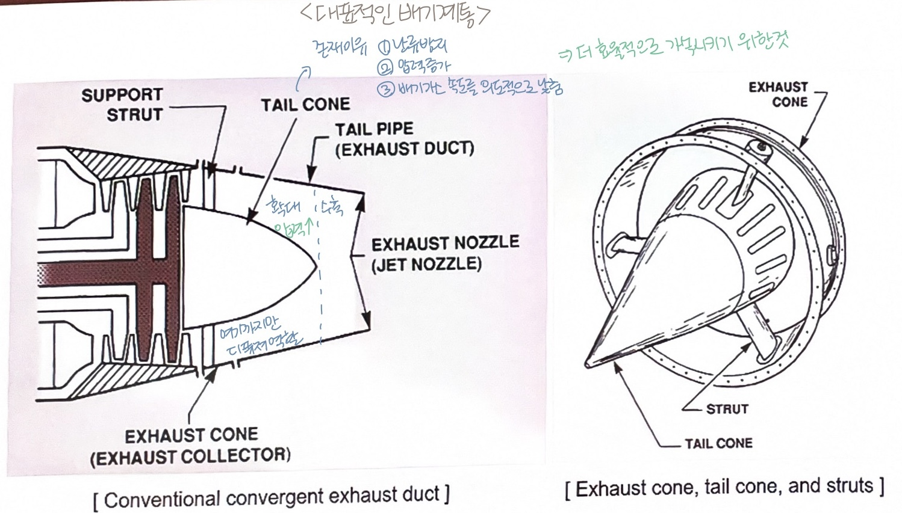
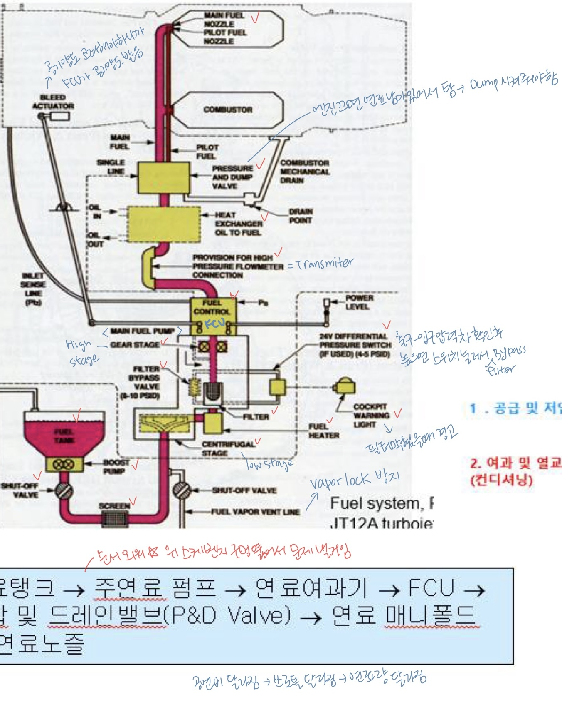
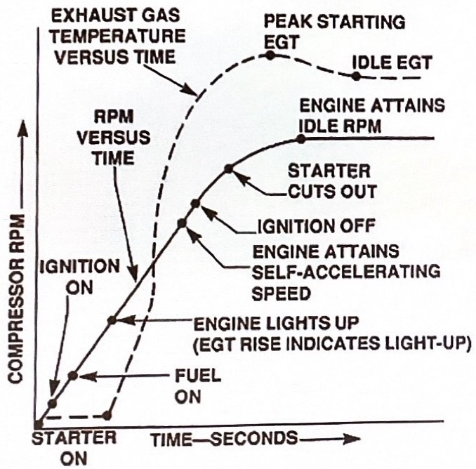

시험문제 22선
- 정답: 디퓨저(Diffuser) — 가스터빈 엔진에서 정압(static pressure)이 가장 높은 지점
- 디퓨저는 압축기와 연소기 사이에 위치하며, 속도 에너지를 압력 에너지로 변환 (Velocity → Pressure)
- 디퓨저 입구 M ≈ 0.5 → 출구 M ≈ 0.35 (속도↓ → 압력↑)
✅ 스월러의 기능 (맞는 것)
- 연료와 공기의 혼합 촉진
- 화염 길이를 짧게 유지 → 연소실 길이 축소, 무게 절감
- 연료 노즐 하류에 재순환 영역(recirculation) 생성 → 화염을 연소기 내부에 안정적으로 유지
- 공기의 축 방향 속도를 5~6 fps 수준으로 낮춤
- 길이가 짧음 (적정 연소통 길이의 약 75%) → 비용 절감
- 무게가 가벼움
- 출구 유동이 균일해 진동이 적음
- 냉각 효율 우수
- 화염 전파가 필요 없음
- 많은 연료 노즐 사용하더라도 균일한 연료·공기 비율을 얻기 어려움
- 구조적으로 약함. 특히 대형 엔진의 경우 고온 화염관 벽의 좌굴 방지가 어려움
- 수리가 어려움
- 대형 시험 설비 필요
- TPR = 터빈 출구 압력 / 터빈 입구 압력 (p₀₄ / p₀₃)
- 터빈을 지나며 압력·온도가 감소하므로 → 값은 항상 1.0보다 작음
TW(터빈 일)와의 관계
- TPR이 작을수록(입·출구 압력차 클수록) → \( TW\uparrow \) (터빈이 일을 잘 함)
- TPR이 1에 가까울수록 → \( TW\downarrow \)
- 터빈 입구 온도 \( T_{0,3} \)가 높을수록 → \( TW\uparrow \)
✅ 좋은 목적 (장점)
- 블레이드 끝에 연속 링 형성 → 진동 특성 향상 + 날개 변형 및 뒤틀림 방지
- Sealing effect (누설 방지 → 효율 증가)
- Tip 부위 공력 특성 향상, 와류 제거
- 더 길고 얇은 날개(경량 구조) 가능
⚠️ 부작용
- 덮개(shroud) 때문에 무게 증가
- → 원심력 ↑ → 크리프(creep) 현상에 더 취약 (크리프 저항성이 떨어짐)
- 실제 터빈 버킷은 한 블레이드에 충동형·반동형이 혼재된 충동-반동 블레이드(Impulse-Reaction Blade)
- root → tip 반동도 증가
- 충동(Impulse, ξ=0%): 압력·속도 변화 없이 방향만 변화, 압력 강하는 스테이터에서 전부 발생
- 반동(Reaction, ξ=50%): 통과 시 속도↑ 압력↓, 스테이터·로터에서 절반씩 압력 강하
- 원래 tip이 회전반경이 커서 속도가 빨라야하는데, twist 시켜서 속도 감소시킴
- stage 입구~출구에서 반경방향을 따라 속도, 압력 분포 균일
- 노즐~버킷 사이 → 반경 방향을 따라 속도↓ 압력↑
반동도 = 로터(버킷)에서의 변화량 ÷ 스테이지 전체 변화량. 1 stage = stator + rotor.
기준별 표현식 (모두 동일한 값)
- 엔탈피·온도 기준: 로터에서의 (엔탈피/온도) 강하 ÷ 스테이지 전체 (엔탈피/온도) 강하
- 압력 기준: 로터에서의 압력 강하 ÷ 스테이지 전체 압력 강하
세 기준이 같은 값이 되는 이유
압축기·터빈의 과정은 단열(adiabatic)이고 밀도 변화를 무시하면 \( dh \propto dp \) (두 값이 거의 같음) → 엔탈피·온도·압력 어느 기준으로 계산해도 같은 반동도
ξ = 0% → 충동(Impulse) 터빈 / ξ = 50% → 반동(Reaction) 터빈. "압력(또는 엔탈피)이 로터에서 얼마나 내려갔나"가 곧 반동도. 계산 방식은 압축기 블레이드나 터빈 블레이드나 동일.
- ① 대류 냉각(Convection): 냉각 공기가 블레이드 내부를 흐르며 벽을 통해 열 흡수. 현대 가스터빈에서 가장 널리 사용.
- q = hA(Tᵥ - T∞)
- 열량 = 열계수 * 단면적 * 온도차
- 표면과 유체 사이 온도차, 열계수가 클수록 열전달이 잘 됨
- ② 막 냉각(Film Cooling): 표면의 작은 구멍으로 냉각 공기를 주입 → 뜨거운 가스와 표면 사이에 단열 공기막 형성
- ③ 충돌 냉각(Impingement): 고속 공기를 내부 표면에 분사 → 앞전(Leading Edge)에 특히 효과적. 에어포일 원하는 부분에만 적용해 전체 표면에 걸쳐 균일 온도 유지
- ④ 발한 냉각(Transpiration): 다공성 벽을 통해 냉각수가 배어 나옴 → 블레이드 전체를 냉각수 흐름으로 덮기 때문에 → 매우 높은 온도에서도 효과적
- "구멍에서 나오는 것" = 막 냉각(Film Cooling)
- 블레이드 표면의 작은 구멍들로 냉각 공기가 분사되어, 뜨거운 가스 흐름과 블레이드 표면 사이에 얇은 공기 단열층(막)을 형성 → 표면을 직접 보호
- 구멍의 위치·각도에 따라 막이 표면을 따라 흐르며 덮어주는 원리를 이해할 것
- 소재: ZrO₂-Y₂O₃ 기반 세라믹 → 얇은 절연층 역할
- 두께 15~25 mil (≈ 100~300 μm), 1 mil당 약 8~16°F 온도 감소
- 낮은 열전도율로 금속 표면 온도를 약 100~150℃ 낮춰줌
- 높은 표면 강도와 내식성 제공
- 플라즈마 스프레이 공법으로 도포
- 고온 가스 환경에서 발생하는 스케일형 부식·침식에 최상의 보호 효과 제공
- 스케일링 → 공기 중 나트륨 + 연료의 황이 모재와 화학 반응을 일으켜 발생
- 문제 상황: 이륙/상승 시 블레이드 팽창 → 케이스와 간극 좁아짐 / 순항 시 냉각 → (터빈 케이스 열팽창에 비해 블레이드 열팽창이 부족해) 간극 벌어짐 → 효율 저하
- 기능: FADEC 제어 + 외부 터빈 케이스에 팬 압축 공기를 분사 → 케이스를 능동적으로 수축/팽창시켜 팁 간극(tip clearance)을 최적으로 유지 → 모든 출력 설정에서 팁 누설 최소화 → 효율 향상
- 테일콘 내부에 디퓨저 형상을 형성 → 터빈 하류에서 압력 회복(압력 상승) & 속도 감소 → 난류 강도 약화
- 지지대(Struts)와 함께 배기가스 흐름을 축 방향으로 정렬
- 난류 방지
- 압력 증가
- 배기가스 속도를 의도적으로 낮춰줌 ✅ 결론적으로 더 효율적으로 가속시키기 위한 것

확산형 배기 덕트
- 아음속(Subsonic): 수축형(Convergent) 테일파이프 사용 → 배기가스를 최대 마하 1까지 가속, M=1 도달 시 질식 유동(Choked flow)
- 초음속(Supersonic): 수축-확산 노즐(Convergent-Divergent, C-D) 사용 → 목(Throat)에서 M=1, 확산부에서 M>1 달성
- 핵심: 수축 노즐에서 가스가 도달할 수 있는 최대 속도는 출구에서의 음속 (Mach 1)
- 터빈 downstream 압력이 대기압의 1.89배가 되는 동시에 배기노즐 출구에 마하수 1인 유동이 형성되면서 최대 배기가스 속도가 형성됨
- 터빈 downstream에 대기압의 1.89배 초과하는 압력이 형성되더라도 배기가스 속도는 더 이상 증가하지 않음
- 이는 배기노즐 출구에 초킹이라는 유동 직식이 발생해 배기가스 속도가 더 이상 증가하지 않기 때문
- ① 캐스케이드형(Cascade): 팬을 통과한 찬 공기(Cold stream)를 역방향 전환. 차단문(Blocker doors) + 캐스케이드 베인 사용 — 역방향으로 25~30% 추력 생성
- ② 조개껍데기형(Clam Shell Door): 공기로 작동. 역추력 선택 시 덕트는 덮개를 벗기기 위해 문이 회전해 정상적인 가스흐름 출구를 닫음. casscade vane이 뜨거운 배기가스를 역방향으로 전환해 역방향 추력 발생
- ③ 버킷타겟형(Bucket Target): 유압으로 작동, 양동이 형태 문으로 뜨거운 배기가스를 역방향 유도 (전진추력 모드 시 역추력장치 문은 닫혀서 엔진에 C-D 노즐 형성), 역추력 door는 전통적인 푸시로드 이용해 작동

연료계통
P&D Valve 안에는 1차·2차 연료를 나누는 밸브가 있고, 운전 단계에 따라 어느 것이 열리고 닫히는지가 핵심:
압력이 낮아 2차 여압밸브는 스프링 힘으로 닫혀 있음 (연료량 ≈ 최대 출력의 1/10)
연료량↑ → 압력이 일정값 도달 → 여압밸브가 열려서 2차 연료까지 흐름
매니폴드 내 잔여 연료를 모두 배출(이륙 중 대기중으로 방출) → 연소 신속 차단, 매니폴드 내 탄화물 발생 방지
운전 단계별 밸브 개폐 상태 정리
| 운전 단계 | Pilot Fuel (1차 / Primary) |
Main Fuel (2차 / Secondary) |
Return to Fuel Supply (펌프 입구 복귀) |
|---|---|---|---|
| 시동 및 저출력 | OPEN (열림) | CLOSE (닫힘) | CLOSE (닫힘) |
| 고출력 | OPEN (열림) | OPEN (열림) | CLOSE (닫힘) |
| 엔진 정지 | OPEN (열림) | CLOSE (닫힘) | OPEN (열림) |
FCU 핵심 역할: 파워레버 위치에 맞춰 Main Metering Valve의 개구 면적을 조절하여 연소실로 가는 연료량(Metered Fuel)을 결정.
- 가속: 급격히 파워레버 작동 시 → 연료량 즉시 증가. 관성력에 의해 기관 회전은 급격히 증가되지 않음. 이때 혼합기가 농후해져 화염소실, 과도한 TIT 상승, 압축기 실속 초래
- 감속: 연료 공급 급격히 줄어들면 → 혼합기 엷어져 화염소실 발생(불꺼짐)
-
💡 핵심 요약
- 입력값: 파워레버 위치, N1/N2 회전수, 압축기 입구 상태(Pt2, Tt2), 연소실 압력(Ps4)
- 연산: 벨로즈와 레버, 캠들이 서로 밀고 당기며 복합적 위치 변화를 만듦
- 출력: Main Metering Valve의 개구 면적 조절 → 연소실로 가는 Metered Fuel 양 조절
- Governor Flyweights: 엔진 과속 방지를 위해 회전수에 따른 원심력으로 연료량 제한하는 피드백 루프 담당
- 센싱부(Sensing): PLA(파워레버), N1/N2(플라이웨이트 거버너), Pt2(입구압·벨로즈), Ps4(출구압), Pb(연소실압), Tt2(입구온도·모세관) 입력 감지
- 컴퓨팅부(Computing): 벨로즈(압력·온도 → 기계 변위), 레버(힘 전달·증폭), 캠(복합 위치 변화) 으로 연산
- 미터링부(Metering): Main Metering Valve가 최종 연료량 조절 / 거버너 플라이웨이트가 과속 방지 피드백
- 엔진의 연료유량
- 압축기 가변스테이터 각도
- 실속방지용 압축기 블리브 밸브
- ACCS
컴퓨팅부 — 거버너(Governor) 플라이웨이트 피드백
엔진 회전수가 정속(설정값)에서 벗어나면 플라이웨이트의 원심력과 스피더 스프링 장력의 균형이 깨지면서 연료량을 자동 보정 → 다시 정속으로 복귀
- 엔진 부하 감소 → 엔진이 가속됨
- 원심력↑ → 플라이웨이트가 밖으로 벌어짐 → 연료 공급이 일부 막힘(감소)
- 엔진이 정속 상태로 복귀 → 플라이웨이트가 똑바로 서며, 원심력 = 스피더 스프링 힘 평형
- 엔진 부하 증가 → 엔진이 감속됨
- 원심력↓ → 플라이웨이트가 안쪽으로 움직임 → 연료 공급 증가
- 엔진이 정속 상태로 복귀
- 오일탱크는 약 10%의 팽창 공간(expansion space)을 반드시 남겨둠
- 이유: "air lock 효과"로 부주의한 과충전 방지 / 운전 중 오일 팽창·공기-오일 분리 공간 확보
- 과충전(Overfill) 시 위험: 탱크 내 공기 공간 감소 → 압력 급상승 → De-aeration 기능 마비 → 오일 미스트가 브리더로 분출(화재 위험), 베어링 시일 손상 → 엔진 내부로 오일 누설
- 역할: 압력이 가해져 있어 오일이 펌프 입구로 잘 흘러들어가게 해줌 + 탱크 내부 기포 발생 억제 → 펌프에서 Cavitation 발생 방지
- 탱크 벤트 릴리프 밸브: 탱크와 대기 사이 차압이 3~6psi일때 여분의 공기 외부로 배출
- Bleed Orifice: 엔진 정지 후 탱크 내부압력 제거
| 구분 | 일반 베어링 (Plain / Bushing) |
볼 베어링 (Ball Bearing) |
롤러 베어링 (Roller Bearing) |
|---|---|---|---|
| 접촉 형태 | 면접촉 (Sliding) | 점접촉 (Rolling) | 선접촉 (Rolling) |
| 마찰 저항 | 큼 (특히 시동 시) | 매우 작음 | 약간 작음 |
| 주요 지지 하중 | 반경 방향 (유막 부상) | 반경 및 축 방향(추력) 동시 지지 | 반경 방향 하중 (대용량) |
| 터빈엔진 주축 적용 | 불가 (용융 및 파손 위험) |
필수 (1번/최전방 추력 지지) |
필수 (터빈 축 축 팽창 수용 → Cover 범위가 넓음) |
오일이 냉각기를 통과할 때 (Hot Mode)
- 오일 온도가 높음 → 서모스탯(Thermostatic Valve)이 열림
- 오일이 냉각기를 통과 → 연료로 열 전달 (오일 냉각 / 연료 예열)
오일이 바이패스될 때 (Cold Mode)
- 저온 시동 직후 등 오일 점도가 너무 높을 때
- 또는 냉각기 막힘 시 → Oil Cooler Bypass Valve(55~75 PSID)가 작동
- 오일이 냉각기를 우회(bypass) → 빠르게 엔진으로 공급
Sequence 순서 (암기)

Hung Start (결핍 시동)
- 점화는 됐지만 Idle RPM까지 올라가지 못하고 낮은 회전수에 머무름
- 엔진이 매우 느리게 가속, EGT/TIT가 느리게 증가
- 원인: 시동기 동력 부족 / 연료 공급 부족
- 조치: 엔진 정지 후 문제점 조사
Hot Start (고온 시동)
- 연료 과다 공급 → 시동 시 EGT/TIT가 제한치 이상으로 상승
- 원인: 연료 농후(결핍시동에서 연료 추가 공급 시 Hot Start로 이어짐), 블리드밸브·VIGVs와 가변정익 고장·교정 불량, 압축기 FOD
- 압축기 서지 유발, 심하면 엔진 교환 수준 손상
- 조치: 엔진 정지 후 문제점 조사
No Ignition / No Start (점화 안 됨)
- 정의: 시동기로 엔진은 정상적으로 회전(motoring)하고 연료도 공급되지만, 정해진 시간(보통 20초) 내에 점화(light-up)가 일어나지 않는 상태 → EGT/TIT 상승이 전혀 없음 (= "no light-up")
- Hung/Hot Start와의 구분: Hung·Hot은 "점화는 됐으나" 회전수가 안 올라가거나(Hung) 과열되는(Hot) 경우인 반면, No Ignition은 애초에 연소 자체가 시작되지 않음 (EGT 무반응이 핵심 식별점)
주요 원인
- 점화계통 고장: 점화 플러그(igniter) 불량, 익사이터(exciter)·점화 리드 단선, 점화 스위치/릴레이 결함
- 연료계통 문제: 연료 공급 부족·차단, 연료라인 내 공기 유입(vapor lock), 연료노즐 막힘, 연료 펌프 불량
- 회전수 부족: 시동기 동력 부족으로 점화에 필요한 최소 공기 유량(rpm) 미달
조치
- 즉시 연료·점화 차단 후 모터링(motoring)으로 잔여 연료 배출(purge) → 재시동 시 Hot Start/연료 고임 방지
가장 많이 쓰이는 시동기
✅ 장점
- 공기 터빈 형태로 출력/무게 비율이 높음 (크기에 비해 출력 큼)
- 중량이 전기 시동기의 약 1/5로 가벼움
- APU·GPU·작동 중인 다른 엔진에서 공기를 받아 시동 가능(Cross Feed)
- 거의 모든 대형 상업용·군용 수송기에 사용
- 예: 보잉 747 — 30 lb 중량으로 200마력 생산
⚠️ 단점
- 별도의 공기 공급원이 반드시 필요 → APU, GPU(지상 동력 장비), 또는 작동 중인 다른 엔진의 블리드 에어(Cross Feed) 중 하나가 있어야 시동 가능
- 충분한 공기압·공기량이 확보되지 않으면 시동 불가 (예: APU 고장 + 지상 장비 없음 → 단독 시동 불가)
- 전기식처럼 배터리만으로 자체 시동(self-start)할 수 없음 → 자력 시동성·독립성이 떨어짐
- 고온·고압 블리드 에어를 다루는 덕트·밸브(SAV 등) 계통이 필요 → 누설·과열 등 정비 요소 증가
- 블리드 에어를 끌어 쓰는 동안 해당 공급원의 출력/효율이 일시적으로 저하됨
윤활계통 (Lubricants & Lubrication System)
Supply 공급 → Distribution 분배 → Scavenge 회수 3단계 계통
① Supply (공급) 계통
- 오일탱크에서 펌프를 통해 베어링·기어박스로 가압된 오일 전달
- 압력 조절 밸브로 과압 방지
- Supply line = 압력 오일
② Distribution (분배) 계통
- Last Chance Filter 통해 각 베어링에 오일 공급
- 오일 제트(Oil Jets)로 베어링에 직접 분사
- 유막 형성 → 마찰·냉각·밀봉
③ Scavenge (회수) 계통
- 사용된 오일을 기어박스·베어링 부품 사이에서 빨아들여 탱크로 복귀
- 용량이 더 큼 (공기 섞여 부피 증가)
- Chip Detector → De-aerator → 오일탱크
4가지 주요 목적
- ① 유막 형성: 금속 표면의 불규칙한 부분을 채워 유막을 형성 → 금속간 직접 접촉 방지 → 마찰 감소
- ② 기밀작용 (Sealing): 베어링 챔버 등 특정 구역에서 외부 먼지 유입 차단 및 내부 압력 조절
- ③ 청결: 오일이 엔진을 순환하면서 이물질을 필터로 운반하여 걸러냄
- ④ 냉각: 오일이 엔진 열을 흡수하여 오일탱크나 열교환기로 전달
윤활 원리
- 유막이 끊기지 않으면 금속마찰이 유체마찰로 전환 → 마찰이 크게 줄어듦
- 유체마찰 발생 시 윤활유 온도 상승 → 점도가 낮아짐 → 윤활을 마친 오일은 냉각기로 보내짐
- → 점도가 높은 윤활유 사용 필요
- Oil pump는 오일에 잠겨 있어 자발적으로 윤활시킴
윤활계통 일반사항
- 윤활계통 종류: ① 압력경감밸브계통 - 오일펌프에서 압력을 제한해 오일 유량 조절 / ② 전유량계통 - 엔진 RPM 변화에 따라 오일압력이 달라짐
- 가스터빈은 피스톤엔진에 비해 오일 소모가 적음 → 비교적 작은 오일탱크 사용. 합성윤활유(synthetic lubricants) 사용
석유계 윤활유는 가스터빈의 고온에서 윤활특성이 급격히 저하 → 합성윤활유(광물성+식물성+동물성 혼합) 사용
- ① 낮은 휘발성: 고고도에서 증발 최소화
- ② 거품억제성: 윤활유 성능 향상, 공동현상(Cavitation) 방지
- ③ 적은 락커(lacquer)·코크(coke) 침전물: 고체입자 형성 최소화 — 윤활유가 뜨거워지면 반들반들해짐(탄화)
- ④ 높은 인화점 (Flash Point): 오일을 가열할 때 가연성 증기가 발생하여 점화원에 최초로 점화되는 온도 — 오일은 불이 잘 안 꺼지므로 잘 타지 않아야 함
- ⑤ 낮은 유동점 (Pour Point): 오일이 중력에 의해 흐르는 가장 낮은 온도 — 낮은 유동점을 가져야 함 (높은 유동점을 가져야 하는 것은 아님!)
- ⑥ 유막 강도 (Film Strength): 응집력(cohesion)과 접착력(adhesion)의 뛰어난 특성 — 압력 하중 및 원심하중 작용 시 표면에 달라붙는 특성
- ⑦ 넓은 온도 범위: 약 -60℉~+400℉, 약 -40℉에서 예열 불필요
- ⑧ 높은 점도지수 (Viscosity Index): 운전온도로 가열 시 얼마나 잘 점도를 유지하는가 — 높을수록 양호
- 오일탱크 주입구 근처에 "오일"이라는 말이 적혀있어야 함
- 부주의하게 오일탱크 팽창공간을 채울 수 없도록 어떤 수단이 마련되어야 함
- 10%의 오일 팽창공간을 마련해야 함 → "air lock 효과": 부주의한 과충전 방지
- 엔진에 있는 배출구로 쏟아져 나온 오일이 이동할 수 있도록 오일탱크 배수구를 마련해야 함
- 오일필터는 계통 모든 곳에 오일이 흐를 수 있도록 해주는 형태여야 함
항공기는 급선회, 배면 비행, 고고도 상승 등 격렬한 자세 변화를 겪기 때문에 오일이 한쪽으로 쏠리면 공급이 끊김 → 별도의 독립된 오일탱크 필수
오일을 너무 많이 넣으면 탱크 내 공기(Ullage Space)가 줄어 계통 압력 급상승 → 공기-오일 분리(De-aeration) 기능 마비 → 오일 미스트가 브리더를 통해 외부로 뿜어져 화재 위험 / 베어링 시일 손상
분광오일분석 (SOAP)
- SOAP = Spectrometric Oil Analysis Program
- 오일 분광계(Oil Spectrometer)를 통해 오일에 포함되어 있는 이물질을 ppm 단위(10⁻⁶ 미크론 단위)로 분석
- 엔진을 분해하지 않고도 엔진 손상 정도와 위치 파악
- 샘플 채취 시점: 엔진 정지 후와 엔진 운전 직전 — 오일탱크 내의 침전물이 없는 위치에서 채취
분석 대상 금속 & 의미
| 금속 | 의미 (어떤 부품 마모) |
|---|---|
| 철(Fe) | 기어, 샤프트, 베어링 레이스 마모 |
| 구리(Cu) | 베어링 케이지, 부싱 마모 |
| 알루미늄(Al) | 압축기 부품, 기어박스 하우징 |
| 은(Ag) | 베어링 케이지 (은 도금 부품) |
| 크롬(Cr) | 강철 합금 부품 |
| 티타늄(Ti) | 팬/압축기 블레이드 |
샘플링 주기
- 소형엔진: 최소 25 엔진작동시간
- 대형엔진: 최대 250 엔진작동시간
- 마모 징후 상승 시 → 주기 단축
🚨 최초로 과도한 마모 징후 나타나면 정비사는 판단
- ① 샘플링 주기 단축
- ② 메인 오일필터를 오일 흐름 반대방향으로 세척 후 마모입자 수집·분석
- ③ 오일 교환
- ④ 오일계통 세척(Flushing)
- ⑤ 엔진 장탈하여 부품 점검
건식 윤활계통 오일탱크 주요 부품
| 번호 | 명칭 | 역할 |
|---|---|---|
| 1 | Scavenge Return Line In | 회수 라인 |
| 2 | Tank Pressurizing Check Valve | 압력 유지 |
| 3 | Vent Tube | 공기 벤트 |
| 8 | Pressure Fill Port | 압력 급유 / 지상 급유 |
| 9 | Scupper Drain | 오일 흘러내리지 않게 함 |
| 11 | Overflow Port | 넘치면(과충전) 빠져나가게 함 |
| 12 | Mounting Strap | — |
| 13 | Filler Cap & Dipstick | 중력식 주입구 / 압력으로 오일 밀어넣음. 오일 양 확인 |
건식 vs 습식 계통 비교
| 구분 | 건식 (Dry Sump) | 습식 (Wet Sump) |
|---|---|---|
| 오일 저장 | 별도 독립 오일탱크 | 엔진 섬프(기어박스)에 저장 |
| 사용처 | 대부분 가스터빈 | APU, GPU, 구형 소형 엔진 |
| 자세 변화 | 안전 — 어떤 자세에서도 공급 | 위험 — 급기동 시 공급 불안정 |
| 오일탱크 | 필수 (별도 위치) | 불필요 |
가장 많이 사용되는 펌프: 베인 펌프, 지로터 펌프, 기어 펌프 — 모두 용적형 펌프(Positive Displacement Pump)이며 자체 윤활 방식
① 베인 펌프 (Vane Pump)
- 슬라이딩 베인이 케이스 내벽을 따라 회전하며 오일 이송
- 회전당 정해진 양 송출
- 상대적으로 단순한 구조
② 지로터 펌프 (Gerotor Pump) ⭐
- 내접기어펌프 — 내부 구동기어 + 외부 아이들러기어
- 치차 1개 더 있음 (Supply 1개 / Scavenge는 베어링마다)
- 소형으로 고효율
- 맥동 감소
- 거품도 잘 안 생김
- Dry Sump의 Scavenge용으로 최적
- 흡입액체가 역류하지 않음
③ 기어 펌프 (Gear Pump)
- 외접형: 구동 기어 + 피동 기어 외부에서 맞물림 → 고속 고압 가능
- 내접형: 크레센트(초승달 모양) 격벽으로 입·출구 분리 → 저전단, 민감한 고점도 이송에 유리
- 오일 펌프 → Main Oil Filter → 엔진 공급
- 필터 막힘 시 Bypass Valve 열려 여과 안 된 오일 공급 (엔진 보호 우선)
- Anti-Static Leak Check Valve (2~3 PSID): 엔진 정지 후 오일이 필터에서 역류하는 것 방지
- System Relief Valve: 펌프 출구 과압 시 바이패스
- 필터 막힘 경고: 차압(PSID) 증가 → 계기판 경고등 켜짐
Last Chance Filter
- 각 베어링 바로 앞에 설치된 최종 필터
- 마지막 이물질 차단 역할
- No.1·1.5·2·3·4 베어링 + AGB·MGB 등 각각 설치
Fuel-Oil Heat Exchanger
- 뜨거워진 오일을 연료와 열교환 → 오일은 냉각, 연료는 예열
- CFM56 등 현대 엔진에서 주로 사용
- Cold Mode: Oil Temperature Differential Pressure & Thermostatic By-pass Valve — 오일이 냉각기를 바이패스
- Hot Mode: 서모스탯이 열려 오일이 냉각기를 통과 → 연료로 열 전달
Oil Cooler Bypass Valve (55~75 PSID)
- 냉각기 막힘 또는 저온 시 바이패스
- 오일 점도가 너무 높을 때(저온 시동 직후) 냉각기를 우회하여 오일을 빠르게 엔진으로 공급
가스터빈 엔진의 주 베어링: 볼 베어링 또는 롤러 베어링과 같은 마찰 방지형(anti-friction) 베어링. 왕복 엔진과 달리 일반 베어링(부싱)은 주축에 사용 안 함 — 빠른 속도로 마찰열 발생이 크기 때문
일반 베어링 (Plain/Bushing)
- 면접촉 (Sliding)
- 마찰 저항 큼 (특히 시동 시)
- 터빈엔진 주축 적용 불가 — 용융·파손 위험
- 부속품 등 하중 적은 일부 부위에 사용
볼 베어링 (Ball Bearing) ⭐
- 점접촉 (Rolling) — 마찰 매우 작음
- Grooved Inner Race에서 회전
- 축방향(추력) + 반경방향(원심력) 동시 지지
- 필수 — 1번/최전방에서 추력 지지
롤러 베어링 (Roller Bearing) ⭐
- 선접촉 (Rolling) — 마찰 약간 작음
- Flat Inner Race — 볼보다 접촉면적 넓음
- 반경 방향 하중 대용량 흡수
- 작동 중 엔진의 축 방향 팽창 수용 가능하도록 배치됨 → Cover 범위가 넓음
- 소기계통에 설치 → 오일탱크와 압력계통을 순환하며 엔진 마모와 손상의 원인이 되는 쇳조각을 붙잡아 걸러냄
- 위치: 오일탱크, GIB(기어박스)
- 자석(Magnetic Plug)이 금속 입자를 포착 → 조종석 경고등 점등
- 경고등이 켜지면 → 다른 엔진계기 지시에 따라 운항 중 엔진 정지, 아이들 상태에서 계속 운전, 정상순항에서 계속 운전할 것인지 판단
- Quick Release / Quick Disconnect 구조: 이거 장착 안 하고 비행해도 오일 새지 않게 되어 있음 (자동 차단 밸브 구조, Self-Sealing Valve Housing + Bayonet Fitting)
- Poppet(sleeve): 강력한 Check Spring, 칩 디텍터를 분리할 때 오일이 밖으로 새는 것을 막는 밸브
칩 판단 기준
| 상태 | 크기 기준 | 조치 |
|---|---|---|
| Acceptable | 0.1인치 미만 | 계속 운전 가능 (정상 마모) |
| Unacceptable | 0.1인치 초과 | 엔진 내부 심각한 손상 징후 → 점검 필요 |
칩 검출기 세대별 발전
| 구분 | 1세대 표준형 자석식 칩 검출기 |
2세대 펄스형 칩 검출기 (Pulsed) |
3세대 정량적 모니터 (QDM) |
|---|---|---|---|
| 판단 방식 | 회로 단락 (단순 On/Off) | 전기 태움 분리 (Burn-off 후 On/Off) | 전자기 유도 (실시간 데이터화) |
| 미세 입자 대응 | 오작동(False Alarm) 유발 | 전기 펄스로 태워서 제거 | 태우지 않고 크기를 측정하여 분류 |
| 제공 정보 | 접촉 여부 | 큰 입자 잔존 여부 | 입자의 정확한 개수, 크기, 누적 질량 |
| 정비 방식 | 사후 정비 (경고등 점등 시 탈거) |
조건부 정비 (Burn-off 실패 시 조치) |
예측 정비 (시간 경과에 따른 마모 트렌드 분석) |
실시간 표시. 한계치 초과 시 호박색(주의) 또는 적색(경고)으로 색상 변화
엔진 정지 후 30분 이내 점검. 캡 열기 전 최소 5분 대기 — 중력에 의해 오일이 내려가기 때문
메인베어링 손상 여부 확인 가능. 소량 입자·금속가루는 정상 마모로 계속 운전 가능
연소기 (Combustor) — Fundamentals
- 연소기는 엔진의 심장 — 연료를 연소시켜 열에너지 생성
- 구성: 외부 케이스 + 내부 라이너 + 연료 분사 시스템 + 점화 시동 시스템
- 고온을 견딜 수 있는 특수 재료로 제작
- 연소 후 가스의 온도는 터빈 노즐 안내 날개로 들어가기엔 너무 높음 → 전체 공기의 약 60%는 화염관으로 진입해 냉각
- 기능: 속도 에너지 → 압력 에너지 변환 (Velocity energy → Pressure energy)
- 압축기와 연소기 사이 부분 = 압축기-디퓨저
- 확산형 덕트이며, 압축기 케이싱에 볼트로 고정
- 가스 터빈 엔진에서 가장 높은 압력 지점
- 디퓨저 입구 마하수: M ≈ 0.5 → 출구: M ≈ 0.35
압축기 → 디퓨저(속도↓ 압력↑) → 연소기(최고압) → 터빈 → 추력
1차 공기 (Primary Air)
- 연료 노즐 영역 → 연소 지원
- 스월러(Swirler) 통과 → 속도 감소
- 약 절반: 스월 베인 통해 축 방향
- 나머지: 라이너 앞쪽 1/3 작은 구멍
2차 공기 (Secondary Air)
- 냉각 용도
- 라이너 안·바깥 표면 냉각막 형성
- 화염을 중앙에 집중 → 금속 표면에 닿지 않도록
- 라이너 뒤쪽 유입 → 터빈 입구 적합 온도로 희석
연소기 구역별 역할:
혼합 & 연소
연소 완료 (2CO+O₂→2CO₂)
냉각 (희석)
- 연료와 공기의 혼합 촉진
- 화염 길이를 짧게 유지 → 연소실 길이 축소, 가스 터빈 무게 절감
- 연료 노즐 하류에 재순환 영역을 만들어 화염이 연소기 내부에 안정적으로 유지
- 공기의 축 방향 움직임을 5~6fps 수준으로 낮추는 재순환 영역 생성
Endothermic Dissociation
연료 분자 → 더 작은 탄화수소
Exothermic Formation
CO와 H₂O의 빠른 발열 생성
Exothermic Oxidation
CO가 CO₂로 산화되는 느린 과정
1. 연소 효율 (Combustion Efficiency)
= 연소된 연료량 / 총 연료 투입량
- 일반적인 연소 효율: 99%
- 연소 생성물의 화학 분석으로 확인 가능
2. 연소 강도 (Combustion Intensity)
[kW / m³·atm]
- 항공 시스템: 2~5×10⁴ kW/m³·atm
- 산업용 가스터빈: 10분의 1 수준
- 연소 강도 낮을수록 설계 요구 충족이 쉬움
- 연소기 일반적인 압력 손실: 2~4%
- 압력 손실 원인: 마찰, 난류, 온도 상승
- Cold Loss (Kᵢ): 마찰 손실 (더 큰 값)
- Hot Loss (K₂): 온도 상승으로 인한 손실
(PLF = 냉각 손실 + 열간 손실)
터빈의 효율은 압력 손실 비율만큼 감소
- 터빈 블레이드는 허브 쪽에서 가장 높은 온도와 응력을 견뎌야 함
- 최고 온도: 블레이드 높이의 약 1/3 지점 (Hub 위쪽)
- Traverse Factor (트래버스 계수): 노즐 설계의 평균 온도 상승으로 나눈 최고 가스 온도와 평균 가스 온도의 차이
터빈 노즐 베인에서 값: 0.05 ~ 0.15 (낮을수록 좋음)
| 구분 | Can Type (다중 연소실) | Can-Annular | Annular (환형) |
|---|---|---|---|
| 장점 | • 유지보수 쉬움 • 개발 쉬움 • 독립적 정비 가능 |
• 다중+환형 절충 • 테스트 용이 |
• 길이 짧음 • 무게 가벼움 • 균일한 출구 유동 • 진동 없음 • 냉각 효율 우수 |
| 단점 | • 출구 유동 불균일 • 진동 심함 • 무거움 • 길이 김 |
• 화염 전파 문제 • 복잡 |
• 유지보수 어려움 • 개발 어려움 • 대형 시험 설비 필요 |
| 사용처 | 구형 엔진 (현재 거의 미사용) | 중형 엔진 | 현재 대부분 엔진 |
① 충돌 냉각 (Impingement)
고압 공기를 라이너 표면에 직접 분사 → 국부적 집중 냉각
② 막 냉각 (Film Cooling)
공기막이 라이너 표면을 보호. 탄소 퇴적 방지
③ TBC (열차폐 코팅)
ZrO₂-Y₂O₃ 세라믹 코팅. 금속 온도 100~150℃ 낮춤
법적 규제 주요 오염물질 4가지:
- 영향 인자: 압력, 온도, 시간
- NOx: 매우 높은 화염 온도 + 긴 체류 시간
- 대책: 화염을 빨리 냉각, 연소 시간 축소
터빈 (Turbine)
- 배기가스 압력 에너지 + 열 에너지 → 기계적 에너지 변환 → 압축기 및 부속 장치 구동
- 터보제트: 연소된 연료에서 얻을 수 있는 에너지의 약 4분의 3이 압축기 구동에 필요
- 터보프롭: 배기가스 에너지의 최대 90%가 터빈을 통해 프로펠러 구동에 사용
- 터빈 블레이드는 연소기 바로 하류 → 압축기 블레이드보다 훨씬 가혹한 환경
노즐 (Nozzle / Stationary Blade)
- 연소기에서 방출되는 고온 가스의 압력 에너지 → 운동 에너지 변환
- 수렴형 덕트(Convergent duct) 형성 → 가속
- 가스를 최적 각도로 터빈 버킷으로 유도 → 최대 효율 회전
- 속이 비어 있으며 압축기 공기로 냉각
- 내열성이 가장 중요한 특성
버킷 (Bucket / Rotor Blade)
- 고온 가스의 운동 에너지 → 기계 에너지 변환
- Dovetail로 로터 디스크에 고정
- Cover(Shroud): 버킷 끝부분 가스 누출 방지
- Fir Tree Base 구조로 디스크에 고정
가스터빈(브레이턴) 사이클: 공기 → 압축기(1→2′) → 연소기(연료 분사) → 터빈(3′→4′) → 배기 + 동력 출력. 터빈을 통과하는 유체는 압력·온도가 감소하면서 축을 돌리는 일을 한다.
기호 정의
- \( p_0 \) = total pressure (전압)
- \( T_0 \) = total temperature (전온도)
- \( h_0 \) = specific stagnation enthalpy (정체 엔탈피)
- \( c_p \) = specific heat (정압 비열)
- \( \gamma \) = specific heat ratio (비열비)
- \( \eta_T \) = isentropic efficiency of turbine (터빈 등엔트로피 효율)
① 터빈 압력비 (TPR, Turbine Pressure Ratio)
출구압 ÷ 입구압 → 터빈에서 압력이 떨어지므로 TPR은 항상 1보다 작음
② 터빈 일 (TW, Turbine Work)
터빈 일 = 입구·출구의 엔탈피 차이에 터빈 효율(\( \eta_T \))을 고려한 실제 추출 일량 (에너지 보존 법칙 · 개방계)
즉 압력차가 클수록 \( TPR(=p_{0,4}/p_{0,3})\downarrow \) → \( TW\uparrow \) / TPR이 1에 가까울수록 \( TW\downarrow \). 연소실 가스 온도가 높을수록 추출 에너지↑ → 현대 엔진이 고온 내열 합금·냉각 기술로 터빈 입구 온도를 높이려는 핵심 이유.
유동 속도 두 성분:
- c: 유체의 절대 속도
- u: 버킷의 접선 속도 (회전 속도)
- w: 버킷에 대한 유체의 상대 속도
유동 속도 = 축방향(z) + 접선방향(θ) 성분
충동 터빈 (Impulse Turbine, ξ=0%)
- 버킷을 통과하는 기체의 압력·속도: 변화 없음
- 방향만 변화 (방향 변화를 통해 에너지 흡수)
- 터빈 반작용 = 0
- 모든 압력 강하가 스테이터(Stator)에서 발생
반동 터빈 (Reaction Turbine, ξ=50%)
- 버킷 통과 시 속도 증가 + 압력 감소
- 수렴 덕트(Convergent duct)를 통해 유동 가속
- 반작용력으로 에너지 추출
- 대칭형 블레이드 설계 가능
- 스테이터와 로터에서 압력 강하가 절반씩
Shrouded Blade (덮개 있는 블레이드)
- 블레이드 끝부분에 Extension cast 주조 → 인접 블레이드와 맞물려 연속적인 링(Continuous ring) 형성
- 블레이드 진동 특성 향상
- Sealing effect (효율 증가)
- Tip 부위 공력 특성 향상
- 개방형 블레이드 끝의 와류 제거
Free Tip Blade (개방형)
- 고속 회전에 적합 (원심력 문제 최소화)
- Squealer Tip 사용: 마모 시 슈라우드 링과 접촉 최소화
- 팁 누설 와류 문제 존재
① 대류 냉각 (Convection)
냉각 공기가 터빈 노즐과 버킷 내부를 흐르면서 벽을 통해 열 제거. 현대 가스 터빈에서 가장 널리 사용
q = hA(Tᵥ - T∞)
② 막 냉각 (Film Cooling)
냉각 공기가 날개 표면 작은 구멍으로 주입되어 뜨거운 가스 흐름과 날개 표면 사이에 단열층 형성 → 날개 보호
③ 충돌 냉각 (Impingement)
고속 공기 분사기로 에어포일 내쪽 표면에 분사 → 금속 표면에서 냉각 공기로 열 전달. 날개 앞전(Leading Edge)에 특히 효과적
④ 발한 냉각 (Transpiration)
냉각수가 블레이드 재질의 다공성 벽을 통과 → 열 전달이 냉각수와 뜨거운 가스 사이에 직접 일어남. 매우 높은 온도에서도 효과적
TBC (Thermal Barrier Coating)
- 두께: 15~25mil (코팅층 1mil = 8~16°F 온도 감소)
- 소재: ZrO₂-Y₂O₃ 기반 세라믹
- 코팅 두께 100~300μm → 금속 온도 100~150℃ 낮춤
- 플라즈마 스프레이 공법으로 도포
- 알루미나이드 코팅: 산화 및 부식 저항성 향상
ACCS (능동 간극 제어)
- 딜레마: 이륙/상승 시 블레이드 팽창 → 케이스와 간극 좁아짐
- 순항 시 냉각 → 간극 벌어짐 → 효율 저하
- 해결: FADEC 제어 + 외부 터빈 케이스에 압축 공기 분사 → 케이스를 능동적으로 수축 → 팁 누설 최소화
- 크리프: 회전 부품에 발생하는 영구적인 길이 증가 현상
- 원인: 작동 중 열 부하 + 원심력
- 터빈 블레이드가 가열/회전 → 정지 반복(엔진 사이클) → 이전보다 약간 더 길어짐
엔진 초기 운전 중 발생
변형률/시간 그래프 평평 구간. 엔진 제조업체가 터빈 수명 예측의 기준
과열, 고출력 장시간 운전, 이물질 유입 시 발생
(Equiaxed Crystal)
1970년 항공 적용
크리프 특성 낮음
(DS: Directionally Solidified)
1982년 항공 적용
횡방향 결정립계 없음
(SC: Single Crystal)
1990년 항공 적용
크리프 특성 최고
SC 블레이드: 모든 결정립계 제거 → 에어포일 형상 단결정 생성 → LCF(저주기 피로) 수명 약 10% 향상
가스 터빈 배기계통 (Gas Turbine Exhaust System)
- 항공기용 가스터빈은 원하는 방향으로 터빈 배기가스를 고속 배출하기 위한 배기계통 보유
- 배기콘(Exhaust cone): 테일콘 내부에 디퓨저 형상 → 터빈 하류 압력 회복 & 속도 감소 → 난류강도 약화
- 지지대(Struts): 배기가스 흐름이 축 방향 되도록 유도
- 테일파이프(Tail pipe) = 제트파이프 = 배기덕트: 항공기 목적에 맞게 설계/제작
- 아음속 항공기: 수축형 테일파이프 사용
- 수축형 테일파이프는 배기가스를 마하 1까지 가속 가능 → 마하 1 도달 시 배기노즐 출구에서 질식 유동(Choked flow) 발생
- 초음속 비행: 수축-확산 노즐(Convergent-Divergent nozzle) 설치 필요
기호 정의
- \( p_1 \) : 입구(터빈 방출) 전압 — 등어오는 압력
- \( p_2 \) : 출구 압력 = 대기압 \( p_\text{atm} \)
- \( \upsilon_1,\,\upsilon_2 \) : 입·출구 비체적 (specific volume)
- \( T_1,\,T_2 \) : 입·출구 온도
- \( \gamma \) : 비열비 \( = c_p / c_v \)
- \( R \) : 기체 상수
- \( A \) : 노즐 출구 단면적
- \( \dot{m} \) : 질량 유량 (mass flow rate)
① 출구 속도 \( V_2 \) 도출 과정 [1/2]
에너지 방정식(열역학 제1법칙) → 엔탈피 정의(\(h = u + pv\))·정압비열 관계식(\(h_1-h_2=c_p(T_1-T_2)\)) 적용 → 이상기체·등엔트로피 관계식 대입 순서로 전개
일반 에너지 방정식 (단열, \(V_1\approx0\), 위치에너지 무시 적용 후 전개)
엔탈피 정의 \(h=u+pv\) 적용 후 정리
\(c_p - c_v = R\), \(\gamma = c_p/c_v\) 대입
온도를 압력비로 변환(등엔트로피 관계) → 최종 출구 속도 식
② 임계 속도 \( V_\text{critical} \) 도출 [1/2 계속]
\(\dfrac{dV_2}{d(p_2/p_1)}=0\) 으로 최대 속도 조건을 구하면:
\(a = \sqrt{\gamma RT}\) : 음속(speed of sound). \(V_\text{critical}\)이 출구 음속 \(a_2\)와 같음 → 수축 노즐이 도달할 수 있는 최대 속도 = 출구에서의 음속(Mach 1)
③ 질량 유량 \( \dot{m} \) 도출 [2/2]
\(\rho_2 = 1/\upsilon_2\) (비체적의 역수) 대입
등엔트로피 관계식 적용 후 정리하면:
④ 임계 압력비 (Critical Pressure Ratio)
\(\dfrac{d\dot{m}}{d(p_2/p_1)}=0\) 으로 최대 유량 조건(=질식 조건)을 구하면:
\(p_2 = p_\text{atm}\)(대기압, 출구) / \(p_1 = 1.89\,p_\text{atm}\) : 터빈 방출 압력(turbine discharge pressure) ← 기억해!
질식 유동 (Choked Flow) 상태의 특징
노즐 출구 속도는 정확히 음속(Mach 1)에 도달. 수축 노즐 단독으로는 초음속 달성 불가
노즐 입구 압력(\(p_1\))을 아무리 높여도, 출구 외부 압력(\(p_2\))을 아무리 낮춰도 출구 속도·질량 유량은 더 이상 증가하지 않고 일정하게 유지(Choked). 음속으로 신호 전달이 제한되기 때문
\(p_2 > p_\text{atm}\) 상태로 배출 → 발생하지 못한 잔여 압력 에너지가 엔진에 압력 추력(Pressure Thrust)을 추가 제공. 배기가스 속도는 더 이상 증가하지 않지만 추력은 증가 가능
이 압력을 초과하더라도 배기가스 속도는 더 이상 증가하지 않는다 — 이것이 초킹(Choked) 현상. 최대 배기 속도 = 마하 1 (음속).
고정면적 배기노즐 (아음속)
- 터보팬/터보프롭 등 아음속 항공기에 사용
- 원추형 테일콘 + 원형 단면 → 수축형 노즐 형성
- 압력비 약 1.9 초과 시 분출 속도 증가하지 않음 (Choked nozzle)
가변면적 배기노즐 (초음속)
- 초음속 비행 위해 수축-확산 노즐 사용
- 이륙 저속 → 고고도 아음속 → 초음속: 넓은 속도 범위 운전
- 각 속도 영역에 맞는 노즐 필요 → 가변 배기 노즐
- C-D 노즐에서 목(Throat)에서 M=1, 확산부에서 M>1
- 현재 군용기에만 사용
- 항공기 이륙 또는 저속 비행 성능 향상을 위해 배기가스 방향 조절
- 배기가스 상방향 배출 → 항공기 앞부분(Nose)이 빠르게 들어올려짐
- 착륙 시 배기가스 역방향 배출 → 제동력 강화
- 대표 사례: F-22 랩터에 사용되는 F-119 터보팬 엔진
- 위치: 터빈과 제트파이프 추진 노즐 사이
- 연소에 필요한 산소: 배기가스에 포함된 미연산소 이용
- 후기연소 → 배기가스 온도 상승 → 비체적 증가 → 제트 속도 증가 → 추력 증가
- 후기연소기 작동 시 추력 100%까지 증가 가능, 그러나 연료량 3~5배 증가
- → 연료소모 증가 + 열효율 감소 = 매우 비효율적
- 사용 시기: 짧은 활주로 이륙, 공중전처럼 연료 효율이 문제되지 않는 경우
배기가스 속도 증가 = √1.69 = 1.3 → 총추력 30% 증가
- 분사막대(Spray bars): 연료 노즐 — 테일파이프 입구에 설치
- 화염유지기(Flame holders): 연료 노즐 하류에 튜브형 격자 또는 수레바퀴 바큇살 형태
- 재순환 영역에 화염이 갇혀 점화원 역할 → 안정된 연소
- 가변 추진 노즐(Variable Propelling Nozzle): 후기연소 작동 시 노즐 면적 확대 (Nozzle Fully Open)
• 후기연소기 장치 = 유동 장애물 → 비작동 시 추력 약간 감소
• 더 무거운 제트파이프 + 후기연소기 장치 → 전체 무게 증가
후기연소 전: 노즐 완전 닫힘(Fully Shut)
후기연소 작동 시: 노즐 완전 열림(Fully Open)
- 착륙 및 이륙실패 초기 단계에서 항공기 속도를 줄이기 위해 설치
- 역추력장치는 타이어 마모 줄이고 착륙거리 단축
- 정상 활주로에서 제동력의 약 20% 생산
- 역방향으로 정격 추력의 35~50% 정도 생산
- 활주로가 젖거나 동결 시 효과적 → 항공기 제동력의 약 50% 담당
역추력장치 종류:
팬을 통과한 공기(Cold stream)를 역방향 전환. 차단문(Blocker doors) + 캐스케이드 베인 사용
뜨거운 배기가스를 역방향으로 전환하는 문 시스템
유압 작동. 양동이 형태 문으로 뜨거운 배기가스를 역방향 유도. 전진추력 모드 시 C-D 노즐 형성
- 제트 속도의 8제곱에 비례 → 속도가 조금만 증가해도 소음이 급격히 증가
- 소음 감소 방법: 배기 노즐을 여러 개의 작은 노즐로 분할 (꽃잎 모양 분사) → 제트와 주변 공기의 혼합 증가 → 속도 급격한 감소 유도
- 현대 고바이패스 터보팬 엔진: 차가운 팬 에어가 뜨거운 코어 제트를 감싸 → 자연적 소음 감소
핵심 요약 & 시험 체크리스트
| 개념 | 정의/역할 | 시험 키워드 |
|---|---|---|
| 디퓨저 | 속도 에너지 → 압력 에너지 변환. 가스 터빈에서 가장 높은 압력 지점 | 확산형 덕트, M: 0.5→0.35 |
| 스월러 | 재순환 영역 형성 → 화염 안정화, 연소실 길이 단축 | 5~6fps, 연소기 길이 축소 |
| Primary Zone | 연료와 공기 혼합 + 연소 (연료/공기비 약 60:1) | 화학양론적 연소 |
| Traverse Factor | 터빈 노즐 설계 평균 온도 상승 대비 최고~평균 온도 차이 | 0.05~0.15, 낮을수록 좋음 |
| TPR | 터빈 압력비 = 출구 압력/입구 압력, 항상 1보다 작음 | 1보다 작음, 단열 과정 |
| Degree of Reaction | 로터 엔탈피 변화/스테이지 전체 변화 × 100% | 충동=0%, 반동=50% |
| Choked Flow | 노즐 출구 속도 = 음속(M=1), 압력 더 높여도 유량 불변 | 0.528, 1.89×p_atm |
| Afterburner | 미연산소 이용 재연소 → 온도 상승 → 추력 증가 | V₂/V₁=√(T₂/T₁), 3~5배 연료 증가 |
| Thrust Reverser | 배기가스 역방향 → 착륙 제동력 증가 | 정격추력의 35~50%, 제동력 20% |
| Creep | 열 + 원심력 → 터빈 블레이드 영구 길이 증가 | 1차/2차/3차 크리프 |
Can Type
장점
• 유지보수 쉬움
• 개발 쉬움
• 독립 정비 가능
단점
• 불균일 출구 유동
• 진동 심함
• 무겁고 길음
Can-Annular
장점
• 다중+환형 절충
• 테스트 용이
• 안정성
단점
• 화염 전파 문제
• 구조 복잡
Annular ⭐현대
장점
• 짧고 가벼움
• 균일 출구 유동
• 냉각 효율 우수
• 진동 없음
단점
• 유지보수 어려움
• 개발 어려움
• 대형 시험 시설 필요
| 방법 | 원리 | 특징/용도 |
|---|---|---|
| 대류냉각 | 냉각 공기가 블레이드 내부 흐르며 벽을 통해 열 제거 | 가장 널리 사용. q = hA(Tw-T∞) |
| 막냉각 | 소형 구멍으로 냉각 공기 주입 → 단열층 형성 | 날개 표면 보호. 탄소 퇴적 방지 |
| 충돌냉각 | 고속 공기 분사 → 에어포일 내쪽 표면에 직접 충돌 | 국부 집중 냉각. 날개 앞전에 효과적 |
| 발한냉각 | 냉각수가 다공성 블레이드 벽 통과 | 최고 효율. 매우 높은 온도에서 효과적 |
| 종류 | 작동 유체 | 작동 원리 | 사용 항공기 |
|---|---|---|---|
| 캐스케이드형 | 찬공기 (Cold stream) | 이동식 카울 후방 이동 + 차단문 접음 → 팬 공기가 캐스케이드 베인 통해 역방향 | 고바이패스 터보팬 (여객기) |
| 조개껍데기형 | 뜨거운 가스 (Hot stream) | 조개 모양 문이 배기 흐름 차단 + 역방향 유도 | 저바이패스 / 소형 엔진 |
| 버킷타겟형 | 뜨거운 가스 (Hot stream) | 유압 작동 양동이 형태 문 → 역방향 유도. 전진 시 C-D 노즐 형성 | 소형 / 군용 제트기 |
Ch.4 연소기
- 디퓨저 역할 & 마하수 변화 (0.5→0.35)
- 1차/2차 공기 역할 구분
- 연소 3단계 (흡열 분해→발열 생성→CO 산화)
- 에너지 80%가 2단계에서 방출
- 연소 효율(99%) & 연소 강도 공식
- 압력 손실 2~4%, PLF 공식
- Traverse Factor 정의 & 적정 범위
- Can / Annular 비교 장단점
- 3가지 냉각 방법 (충돌/막/TBC)
- 배출물 4종류 & 영향 인자
Ch.5 터빈 & Ch.6 배기
- 터빈 역할 & 노즐/버킷 기능 구분
- TPR 정의 & 항상 1보다 작음
- TW 공식 & 단열 과정
- 속도 삼각형 c, u, w 정의
- 충동 터빈(ξ=0%) vs 반동 터빈(ξ=50%)
- 크리프 3단계 & 가속 크리프 원인
- 블레이드 재료 발전 (등축→DS→SC)
- 4가지 냉각 방법 & TBC 구조
- ACCS 역할 (팁 간극 능동 제어)
- 질식 유동 임계 압력비 (0.528, 1.89배)
- C-D 노즐 원리
- 후기연소 작동 원리 & V₂/V₁=√(T₂/T₁)
- 역추력장치 3종류 & 효과 (35~50%)
- 배기 소음 ≈ V_jet⁸
연료 & 펌프
- 연료 흐름 순서: 탱크→부스터→LP필터→가열기→EDP→HP필터→FCU→P&D→매니폴드→노즐
- 펌프 3종: 부스터(전기모터/Impeller) / 저압단(EDP/Impeller) / 고압단(EDP/Gear)
- 고압 기어 펌프 = Positive Displacement (용적형) → 회전수에 비례하여 정량 송출
- Shear Section = 기계적 퓨즈 (과부하 시 차단)
- 초과 연료 → 차압조절밸브 → 펌프 입구 바이패스
- Vapor Lock: 기체 처리 장치를 통해 제한 → 이착륙 구간에만 연결기
FCU & 노즐 & P&D Valve
- FCU = 기계식 컴퓨터. 입력(PLA·N1/N2·Pt2·Ps4·Pb·Tt2) → 연산(벨로즈·레버·캠) → 출력(Main Metering Valve)
- 거버너: 과속→연료 감소 / 저속→연료 증가
- FADEC: 디지털 전자식. 트리밍 불필요
- FCU Trimming: EGT 증가 추세 → 트리밍 필요 신호
- Simplex: 1개 오리피스. Sector Burning (절반 노즐만 사용)
- Duplex(단선/복선): 1차(Pilot) + 2차(Main) 분리
- P&D Valve: 1차/2차 분배 + 정지 시 Dump(드레인)
- Hot Streaking 원인: 이물질 / 카본 침착
연료 종류 암기
등유유분+첨가제
등유+가솔린 50:50. 결빙점 -60°C
높은 인화점 Kerosene
JP-4 대비 안정성↑. 탱크·차량에도 사용 가능
휴스턴화학. 물의 빙점을 연료 온도보다 낮게 유지
연료 및 연료계통 (Fuel & Fuel System)
필기 핵심: 연료탱크 → 부스터 펌프 → 연료여과기 → 주연료 펌프(EDP) → 연료여과기 → FCU → P&D Valve → 연료 매니폴드 → 연료노즐 → 연소실
- 주요 기능: 지상 및 공중 운용의 모든 조건에서 엔진에 정확한 양의 연료를 공급
- 증기 잠금(Vapor Lock) 방지 — 기체가 아닌 액체를 처리하도록 설계된 장치를 통해 연료 흐름을 제한하는 현상
- 더 높은 추력이 필요할 때 스로틀을 열면 연료 분사 노즐의 압력이 증가하고 연료 유량이 증가 → 터빈 입압(TIT) 증가 → 터빈 통과 배기가스 속도 빨라짐 → 회전수 증가 → 추력 증가
- 연료 흐름은 공기 흐름의 변화에 맞춰 조정되어야 하며, 공기 흐름 대 연료 흐름 비율이 변하면 스로틀을 레버 위치로 원래 설정된 엔진 속도보다 증가하거나 감소하게 됨
- 고도·기온·항공기 속도 변화 → 공기 밀도 변화 → 유입 공기 질량 변화 → FCU가 자동 조절
① 부스터 펌프 (Boost Pump)
- 임펠러(Impeller) 타입
- 전기 모터에 의해 구동
- 연료탱크 내부에 잠겨 있음 (Submerged)
- 탱크 → 주연료 펌프 입구로 이송
- Vapor Lock 방지
② 저압단 펌프 (Low Stage)
- 임펠러(Impeller) 타입 (원심형)
- EDP(엔진 구동 펌프)에 의해 구동
- 기어박스(GIB)에 부착 → 엔진이 돌림
- 1단 원심승압 역할 (30~50 PSID)
③ 고압단 펌프 (High Stage)
- 기어 타입 (Gear Type)
- 용적형 펌프 (Positive Displacement)
- 회전수만큼 정확한 연료량 송출
- 공기량도 고려 → FCU에 신호 전달
- 기계적 결함/고착 시 Shear Section이 끊겨 엔진 보호
- 엔진으로 구동 — 엔진 속도 증가 → 펌프 속도 증가 → 더 많은 연료 공급
- 엔진에서 요구하는 것보다 초과하는 양의 연료를 연료조절기에 연속적으로 공급할 수 있도록 설계
- 연료조절기는 요구량 공급 후 나머지 연료를 차압조절밸브를 통해 펌프 입구로 되돌려 보냄
- 자가 윤활 방식 — 연료로 윤활함
- 일반적으로 1~2개의 스퍼기어 요소 + 가끔 원심승압 요소 포함
EDP 구조 (Fig 12-3)
• 1단: Low-pressure centrifugal impeller (저압 원심 임펠러)
• 2단: Dual spur-gear type high-pressure stage (기어 타입 고압단)
• Pressure relief valve: 출력 압력 제어
• Check valve: 역류 방지
• Shear section: 기계적 과부하 차단 (퓨즈 역할)
- 연료 공급 중 유입된 물에 의해 얼음 결정이 형성되는 것을 방지
- 결빙 → 필터 막힘 → 여과되지 않은 연료가 하류 구성품으로 흘러감
- 심한 경우 결빙이 연료 흐름방해를 초래하며, 필터 하류 구성품에 다시 결빙 발생 시 엔진 꺼짐
- 필터 결빙이 지나쳐 압력이 저하되면 계기판에 경고등 켜짐
- 연료-오일냉각기 또는 연료가열기는 엔진연료 부스트 펌프와 주연료 펌프 필터 입구 사이에 설치
• 이륙 전 1분간 사용 — 과잉 가열은 증기폐쇄의 원인, 연료조절기에 열손상 유발
• 연료필터 바이패스 등이 켜지면 작동
• 이륙, 착륙, 복행 시에는 작동시키면 안 됨 — 극한 비행 영역에서 연료증발로 인한 연소정지 위험
연료계통 마지막 구성품. 연료분배기(fuel distributor)라고도 불림. 연료는 액체 상태에서 연소되지 않기 때문에 무화(atomization)시켜 연소실에 공급
① 단식 노즐 (Simplex)
- 작고 둥근 오리피스로 하나의 분무 제공
- 내부 플루트형 스핀실에서 선회운동 → 연료 축방향 속도 줄이며 무화
- 체크밸브: 엔진 정지 후 연료를 차단, 연료가 연소실 내부로 흘러가는 것 방지
- 단식 노즐 적용 시 부분연소(Sector Burning) 실시 — 엔진 시동 시 전체 노즐 중 절반 또는 그 이상을 사용, 시동 후 아이들속도까지 운전 → 비행 아이들 속도에서는 연료 압력이 충분히 높아져서 모든 연료 노즐 사용
② 단선 복식 노즐 (Single-line Duplex)
- 하나의 입구도 연료를 공급받아 두 개의 분무 오리피스로 분배
- 엔진 시동과 가속: 중앙 등근 오리피스 = 1차 연료(Primary Fuel)
- 2차 연료(Secondary Fuel): 외부 환형 노즐이 미리 정해진 연료압력이 올라오면 열리면서 파일럿 연료와 함께 분사
- 외부 오리피스로부터 분사되는 연료는 압력이 높고 양도 많으므로 고출력 시에도 연료가 라이너에 부딪히지 않도록 좁은 각도로 분사
- 복식노즐: 효율적인 연료 분무 및 연료-공기 혼합 위해 각 오리피스 마다 스핀실 사용
③ 복선 복식 노즐 (Dual-line Duplex)
- 단선 복식노즐과 유사, 단 일차·이차 연료를 분리하는 유량분배기 없음
- P&D valve를 이용하여 1차 연료(Pilot Fuel)와 2차 연료(Main Fuel)를 분배
| 구분 | 1차(Primary/Pilot) | 2차(Secondary/Main) |
|---|---|---|
| 작동 시점 | 시동 및 전 구간 | 고출력 및 정상 비행 시 |
| 주요 목적 | 점화 및 안정적 화염 유지 | 고출력 및 대량 연료 공급 |
| 흐름 경로 | 중앙의 좁은 오리피스 | 외곽의 넓은 오리피스 |
🔥 핫 스트리킹 (Hot Streaking)
- 무화되지 않은 연료의 흐름 → 냉각공기 막을 뚫고 연소기 라이너에 충돌하거나 터빈 노즐 같은 하류 구성품까지 진행 → 위험
- 원인: 노즐 내에 이물질 존재 / 노즐 오리피스 외부에 카본 침착
- 분무 형태가 약간 뒤틀리면 화염이 라이너 중앙에 위치하지 않고 라이너 표면에 닿아 열점을 형성 → 심한 경우 라이너에 구멍 생성
- 복선 복식 연료노즐 이용 시 1차 연료와 2차 연료를 분배
- FCU와 연료 매니폴드 사이에 설치
- 가압(Pressuring): 미리 정해진 압력에 의해 P&D valve 내의 가압밸브를 열어 1차 연료 매니폴드 뿐 아니라 2차 연료 매니폴드로도 연료가 흐르게 하는 것을 의미
연료량 최대 출력의 1/10 수준. 압력도 낮아 2차 연료의 여압밸브는 스프링 힘으로 닫혀 있음
연료량 증가 → 압력 증가 → 여압밸브가 열려 2차 연료도 흐르게 됨
매니폴드 계통 내 연료를 모두 비움 → 탄화물 발생 방지 → 1차 연료를 드레인 탱크에 배내고 대기 중으로 방출 (최근 방출구를 막아 대기오염 방지)
1. 센싱부 (Sensing Section) — 입력
- ① PLA (Power Lever Angle): 파워 레버 위치
- ② 엔진 속도 N1/N2: 연료조절기 내부 플라이웨이트 거버너를 통해 전달
- ③ 압축기 입구 압력 Pt2: 연료조절기의 벨로즈(Bellows)로 전달 — 비행 속도, 고도에 따라 변하는 공기밀도 조건 감지
- ④ 압축기 출구 압력 Ps4: 내부 벨로즈로 공기의 정압 전달 → 공기 질량 유량을 연료조절기에 제공
- ⑤ 연소실 압력 Pb: 연소기 라이너 내부 정압 → 연소실 압력과 공기 중량 사이에 선형적 관계 → 연소실 벨로즈는 10% 더 많은 연료를 보내서 정확한 공연비 유지
- ⑥ 압축기 입구 온도 Tt2: 모세관 튜브로 연료조절기에 보내며, 온도에 따라 수축 또는 팽창 → 공기의 밀도값을 연료조절기에 제공
2. 컴퓨팅부 (Computing Section) — 연산
- 벨로즈(Bellows): 압력·온도 신호를 기계적 변위로 변환
- 레버(Lever): 힘 전달 및 증폭
- 캠(Cam): 복합적인 위치 변화를 만듦
3. 미터링부 (Metering Section) — 출력 = Valve
- Main Metering Valve: 개구 면적을 결정 → 연소실로 가는 연료량 최종 조절
- 거버너(Governor) 플라이웨이트: 과속 방지 — 회전수에 따른 원심력으로 연료량을 제한하는 피드백 루프 담당
거버너(Governor) 동작
① 엔진 부하 감소 → 가속
② 플라이웨이트 밖으로 벌어짐 → 연료 공급 일부 막힘
③ 엔진이 정속으로 돌아옴
① 엔진 부하 증가 → 감속
② 플라이웨이트 안쪽으로 움직임 → 연료 공급 증가
③ 엔진이 정속으로 돌아옴
FADEC (Full Authority Digital Electric Control)
- 전자기술 발달로 기존 유압-기계식 FCU와 아날로그 전자식 FCU 대신 디지털 전자식 엔진 조절장치 출현
- 고성능 마이크로 컴퓨터로 되어 있음
- 엔진 연료 유량(FMU), 압축기 가변 스테이터 각도, 실속 방지용 압축기 블리드 밸브, ACCS 등을 종합적으로 조절
- 비상상태에 최적인 상태로 엔진을 조절하기 때문에 비행 상태량뿐만 아니라 비행 상태량을 포함한 다수의 입력신호를 전산처리함
- FCU Trimming = 엔진 트리밍이라고도 함
- FCU는 기계 장치라서 조정 필요 (FADEC는 트리밍 필요 없음)
- 목적 ①: 정해진 회전수와 운용 관계를 초과하지 않은 상태에서 정격 출력을 유지하기 위해 실시
- 목적 ②: 신규 엔진은 최적의 성능을 발휘하지만 엔진의 사용 기간이 늘어남에 따라 압축기 부문의 파울링(erosion/distortion) 등이 발생하면 압축기 효율이 저하되어 엔진 출력 저하 → 출력감소를 보상하기 위해 FCU Trimming 실시
- 목적 ③: 특정 EPR에서 EGT가 증가하는 경향이 있다면 Trimming이 필요하다고 판단함
- 트리밍 = 민감도 조절 = spring back → 케이블 tension이 적절한지 확인하는 과정
- max보다 좀 더 갈 수 있게 쿠셔닝(Margin) 확보하는 과정
- 현대 고성능 엔진은 대부분 컴퓨터가 연료량을 제어하여, 엔진 상태에 적합하도록 연료량이 자동 조절되므로 Trimming이 필요치 않음
항공유 2대 계열
- 항공유에는 크게 두 가지 종류 — 항공유(avgas, 가솔린)와 제트 연료(kerosene계)
- 제트 연료는 등유와 유사한 액체 탄화수소이며, 일부는 휘발유와 혼합됨
- 항공유는 성분상 등유(kerosene)와 동일하며, 항공유는 등유 유분에 여러 가지 첨가제를 혼합하여 제조
- 가스 터빈 연료는 왕복 엔진 연료처럼 색상으로 구분되지는 않지만, 자연적으로 옅은 노란색
| 연료 | 특징 | 사용처 |
|---|---|---|
| Jet A-1 | DERD 2494(영국), ASTM D 1655 규격. 등유 유분에 첨가제 | 민간 여객기 |
| JP-4 | 등유 + 가솔린(나프타) 각 50% 혼합. Wide-cut gasoline | 전투기. 결빙온도 -60°C |
| JP-5 | 높은 인화점 Kerosene, 초음속용 | 미 해군 수송기. 높은 인화점 → 안정성 |
| JP-8 | MIL-T-83133 규격. JP-4 대비 안정성 우수 | 군용. 현재 국내 군용 항공유는 JP-8. 탱크, 차량에도 사용 가능 |
Wide-cut Gasoline (JP-4) 단점
- 고고도에서 연료의 증발로 인한 손실 증가
- 지상에서 발화 위험 증가
- 항공기 충돌 시 생존 가능성 저하
- → 미군은 1970년대 다시 kerosene-type fuel(JP-8) 복귀
연료 구비 조건
- 발열량이 클 것
- 연소성이 좋고 Soot(그을음) 발생이 적을 것
- 휘발성이 적당하고 시동성과 재착화 특성이 좋으면서 Vapor Lock을 일으키지 않을 것
- 저온에서 동결되지 않을 것 (제트연료 결빙점: -40 ~ -60°C)
- 부식성이 없을 것 (황성분 최소화 — 황산으로 변하여 터빈 구성품 부식)
- 열안정성이 좋을 것
- 이물질이 들어 있지 않을 것
미생물 억제제 (Biocide)
- 연료탱크에 물이 포함되어 있는 경우 자연스럽게 미생물 성장
- 미생물은 유기체와 박테리아나 공팡이류에 관계없이 심각한 효과를 나타냄
- 이들 미생물은 부식화합물을 형성하여 연료탱크의 금속 벽과 바닥을 부식시킴
- 대형 항공기: 날개를 연료탱크로 사용(wet wings) → 날개가 구조적으로 약해지는 문제 발생
- 날개를 연료탱크로 사용하는 항공기는 연료탱크 내벽을 부식저항성을 가지는 물질로 코팅처리
방빙 첨가제 (Anti-icing) — Prist
- 항공기 연료는 아무리 주의를 기울여도 연료 주입과정에서 일정량의 물이 연료와 함께 주입
- 항공기가 고고도에서 장시간 비행한 후에는 연료탱크 표면과 연료 온도가 지상에서 주입할 때보다 낮아짐 → 결빙 위험
- 가장 일반적인 연료 첨가제 = 연료 방빙 및 미생물 억제제
- 가장 많이 사용하는 연료 방빙 및 미생물 억제제: Prist (휴스턴화학 제조)
- Prist는 연료 온도가 내려감에 따라 첨가제가 더 높은 농도로 물과 결합하여 물의 빙점을 연료 온도보다 낮게 유지시켜 줌
- Prist 첨가제는 장기간 공기와의 접촉을 포함하여 산화제와의 접촉을 피해야만 함
- 대부분의 경우 첨가제는 연료공급회사가 연료에 섞음. 만일 연료공급회사가 연료에 미리 섞지 않으면 연료를 항공기에 주입할 때 넣어야 함
- 엔진 구동식 외장형 기어박스는 부속 장치의 주요 구성 요소
- 연료 펌프, 오일 펌프, 연료 제어 장치, 시동 장치 등 엔진 작동에 필수적인 부속 장치와 유압 펌프, 발전기 등의 부품은 주 기어박스(GIB)에 장착
- 엔진 코어 축 → 베벨 기어 → 레디얼 드라이브 샤프트 → 기어박스로 동력 전달
- GIB는 엔진 팬 케이스 아래 또는 측면에 위치 (위치 = 주 기어박스)
엔진 시동계통 (Starting & Ignition Systems)
- 가스터빈엔진 시동: 시동계통 + 점화계통 동시 필요
- 시동계통: 압축기와 터빈을 회전시켜 연소계통으로 압축공기가 공급되도록 해줌
- 점화계통: 연소기 내부에 형성된 연료-공기 혼합기에 점화원을 공급하여 화염이 형성되도록 해줌
- 대부분의 가스터빈엔진은 시동을 위해 APU 사용 (지상에선 GPU)
- APU는 압축기에 큰 토오크를 전달해줄 수 있는 시동모터(Starter Motor) 보유
- 시동 방법: 전기식, 유압식, 공기식 등 다양한 방법
- 일부 APU는 바퀴 달린 카트에 설치(GPU라 함)하여 다른 항공기 시동에 사용
- APU는 항공기 도관에 호스를 이용하여 연결 — 호스에는 체크밸브가 설치되어 APU→항공기로 공기 흐를 수 있지만, 메인엔진의 블리드 공기가 APU로 역류하지 못하도록 되어 있음
- APU: 엔진이 정지해 있는 동안 선실 점등과 압력 및 다른 계통에 충분한 동력 공급
- 대개 APU는 적당한 속도에서 자동으로 스위치가 꺼지는 자체의 전기시동모터에 의해 시동
- 메인엔진이 시동 걸리고 적당한 조건에 도달하면, APU는 스위치가 꺼지고 엔진과 천천히 분리됨
Sequence 순서 (암기)
⭐ RPM and EGT curves during start (그래프 순서 암기)
필기: 그래프 → 객관식이면 순서로, 주관식이면 빈칸 뚫어놓고 적어
Hung Start [결핍 시동]
- 현상 ①: 엔진이 시동기가 차단된 상태(Starter Cut)에 머물러 있으면서 정상적으로 Idle 상태에 도달하지 못하고 회전 — 즉 Idle RPM까지 올라가지 못함
- 현상 ②: 엔진이 매우 느리게 가속되며, EGT 또는 TIT가 느리게 증가
- 원인: 보통 시동기에 충분한 동력이 공급되지 못해서 / 연료 공급량이 부족해서 발생
- 조치: 엔진을 정지시킨 후 문제점 조사 실시
Hot Start [고온 시동]
- 현상: 연료 공급량이 비정상적으로 많아서 엔진 시동 시 EGT 또는 TIT가 제한치 이상으로 올라가는 상태
- 원인: 연료가 과다 공급되어 연료농후 상태에서 발생 (결핍시동 상태에서 연료를 추가로 공급하면 대부분 Hot Start로 이어짐)
- 기타 원인: 블리드밸브 고장, VIGVs와 가변정익 고장, 교정 잘못, 압축기 FOD
- 고온시동 시 압축기 서지를 유발시키기도 함
- 만약 Hot Start로 damage를 받았다면 엔진을 교환해야 할 정도로 문제가 커짐
- 조치: 엔진을 정지시킨 후 문제점 조사 실시
- 가스터빈엔진은 일반적으로 시동 모터의 동력이 주 부속 기어박스에 전달되어 압축기를 회전시킴으로써 시동
- 이중 압축기 가스터빈(dual-compressor)에서 시동 모터는 고압 압축기 시스템만 회전시킴
- 단일 압축기를 사용하는 프리 터빈, 터보프롭, 터보샤프트 엔진: 시동 모터가 액세서리 기어박스를 통해 압축기만 회전시킴 — 프리 터빈은 시동 모터 구동 장치에 연결되어 있지 않음
- 시동 모터와 터빈 휠 각각은 단독으로는 정지 상태에서 공회전 속도까지 올릴 만큼 충분하지 않지만, 함께 사용하면 약 30초 만에 부드럽게 공회전 속도(약 45%)에 도달
- 시동 모터는 자체 가속 속도에 도달한 후 5~10% RPM에서 속도 센서 장치에 의해 자동으로 정지되는 경우가 많음 — 이 시점부터는 터빈 동력만으로 공회전 속도까지 올릴 수 있음
- 터보프롭·터보샤프트 엔진: 로터의 항력을 줄이고 속도와 공기 흐름을 증가시키기 위해 저피치로 시동됨 (load가 걸리지 않게)
1. 전기 시동기 (Electric Starter)
- 전기 시동기는 무거워서 항공기 엔진에 널리 사용되지 않음
- APU와 GPU, 그리고 일부 소형 항공기용 엔진에 사용
- 모터와 엔진을 연결하는 기어와 클러치 판에 의해 작동
- 클러치는 최적의 속도가 얻어졌을 때 모터와 엔진을 분리하는 데 사용 → 모터와 엔진 분리는 자동적으로 일어남
- 공급된 전기는 점화뿐만 아니라 모터를 시동하는 데 사용
- 전압은 대개 시동기 속도가 증가함에 따라 느리게 증가
- 전기 공급: 28V DC
- 대형기는 Pneumatic (공기식) Starter 사용
주요 구성 (Overrunning Clutch)
- Overrunning 될 때 자동 분리 — 안 떨어지면 모터 망가짐
- Pawls: 역회전 방지 클릭 기구
- Ratchet Engine Drive Gear: 엔진에 토크 전달
- Friction Clutch Plates: 부드러운 토크 전달
- Clutch Retract Spring: 분리 후 복귀
2. 시동기-발전기 (Starter-Generator)
- 소형 가스터빈의 시동장치로 널리 사용
- 소용량이라 대형 가스터빈엔진에는 적용 불가
- 두 개를 하나로 해결할 수 있어 무게를 절감 → 소형 제트항공기(예: 비즈니스 제트)에서 널리 사용
- GIB에 Spline으로 연결됨
GCU (Generator Control Unit) — 이게 핵심 장치!
- ① 시동 모드 제어 (Starter 제어)
- ② 모드 전환 (Cut-out 및 변환 단계) ← 자력회전(Self-Sustaining Speed) 가능해지면
- ③ 발전 모드 제어 (Generator 및 전압 조절)
3. 공기식 시동기 (Pneumatic Starter / Air Turbine Starter) ⭐
- 공기 터빈 형태로 높은 출력/무게 비율 — 크기에 비해 출력이 큼
- 공기식 시동기의 중량은 전기 시동기의 약 1/5 정도로 가벼움
- 거의 모든 대형 상업용 항공기와 대형 군사용 수송기에 사용되고 있으며, 소형 항공기에도 사용 증가하는 추세
- 저압(45 psig)의 대량 공기(50~100 lb/min)를 항공기에 장착된 APU, GPU, 또는 다른 작동 중인 메인엔진에서 공급받음
- 일반적으로 APU나 GPU를 이용하여 한 엔진을 먼저 시동하고, 시동이 완료된 엔진으로부터 공기를 공급받아 나머지 엔진 시동 = Cross Feed
- 시동기의 터빈은 60,000~80,000 rpm으로 회전하며, 높은 토크를 얻기 위해 20~30:1로 감속
- 보잉 747: 30 lb 중량으로 200 마력 생산 (시동기는 빨리 돌고 토크는 천천히 줌)
- 엔진 GIB에 장착
공기식 시동기 주요 구성
- Starter Air Valve: 공기 유입 제어
- Air Turbine Starter: 공기 에너지 → 회전력
- Reduction Gears: 감속비 20~30:1 (크기에 비해 출력 큼)
- Sprag Clutch Ratchet: 자력회전 후 자동 분리
- Shear Point: shaft에 흠집을 내어 고장나면 Starter만 끊어져서 나머지 보호. Lubrication에도 Shear Point(Pump) 있었음
- Flyweight Cutout Switch: 속도가 빠르면 Cut-off 시킴 (원심력비교)
- Magnet Drain Chip Detector: 자석식 드레인 칩 검출기
- QAD (Quick Attach Detach): 즉각 분리 연결 구조
APU (Auxiliary Power Unit)
- 항공기에 부착된 소형 가스터빈엔진 — 소형 가스터빈을 이용하여 대형 엔진 시동
- APU 압축기로부터 대량의 저압공기(40~70 psi)를 엔진 시동계통으로 보냄
- 압축공기 이외에도 전기, 또는 hydraulic power (pump) 생산
- 엔진 정지 시 메인 엔진 역할 수행
- 후방동체에 위치 — 꼬리날개 쪽
GPU (Ground Power Unit)
- 바퀴 달린 카트에 설치한 APU
- GTC (Gas Turbine Compressor): 압축공기 생산
- GTG (Gas Turbine Generator): 전기 생산
- 지상에서만 사용
기타 시동기들은 명칭, 이게 뭔지만 간단하게 알고 있으면 됨 — 현재 대부분 범용이나 상업용 항공기에 이상 사용되지 않음
| 시동기 종류 | 특징 |
|---|---|
| 4. 고-저압 공기식 | 저압 또는 항공기 장착된 저압/고압(3,000 psi) 공기를 이용하는 공기터빈 형태. 보기류 기어박스에 장착. Self-contain Start(자체시동) 가능 |
| 5. 카트리지-공기식 | 전기 시동기보다 빠르게 시동 가능 → 빠른 시동 요구되는 일부 군용기에 적용. 화약과 유사한 폭발성 고체 추진제를 사용하거나 공기식 시동기와 유사하게 큰 체적을 가지는 저압 공기를 사용. 추진제는 항공기 배터리를 이용하여 전기적으로 점화 → APU나 GPU 없이 자체시동능력 |
| 6. 연료-공기 연소식 | 보기류 기어박스에 장착. 고압공기(3,000~6,000 psi)에 연료를 분사하여 연소시켜 사용. 스파크플러그 사용. 소형 가스터빈과 유사. 항공기 배터리를 이용하여 전기적인 점화 → 자체시동능력 |
| 7. 터빈충돌 시동 | 체적이 큰 저압공기(45 psig)를 터빈 휠로 보내 블레이드에 직접 충돌시켜 터빈을 회전시켜 시동. 가스터빈이 자체가속속도에 도달하면 공기 공급 중단. Starter가 없고 바로 터빈 돌려줌 — GPU가 필수적 |
| 8. 유압 시동기 | 보기류 기어박스에 장착. APU에 장착된 유압펌프나 수동펌프(hand pump)와 축압기(accumulator)로부터 공급되는 유체에 의해 구동. 장점: 유압 떨어지면 재충전만 해주면 됨. 현재 사용 X |
공기식 시동기 외관 주요 구성품 (QAD)
- QAD adapter / QAD coupling clamp: Quick Attach Detach — 즉각 분리·연결
- Oil fill plug: 오일 채워주는 곳
- Magnetic oil drain plug: 자석식 드레인 칩 검출기
- Sight glass: 오일 양 확인
- Oil level overflow: 과충전 방지
점화계통 (Ignition Systems)
- 대개 연소계통에는 서로 다른 위치에 두 개의 점화플러그가 설치
- 항공기 배터리로부터 저전압 전류(대개 28V DC) 공급받음
- 이 저전압 전류는 점화여자기(Ignition Exciters)에서 승압된 후에 높은 에너지를 가진 스파크를 발생시킴
- 현대식 가스터빈 점화계통은 단속임무나 연속임무 사이클을 가지는 고전압 충전지방전식 임
- 충전지방전 점화계통은 고압계통(단속임무형)과 저압계통(연속임무형)으로 분류
- 주점화계통은 기본적으로 지상시동 시 사용하며, 시동이 종료된 후에는 꺼짐
- 정상시동 후에는 연소실 화염이 점화원 역할 — 가스터빈 점화계통은 짧은 시간 동안만 사용하기 때문에 고장발생 거의 없음
- 단속임무형이란: 점화계통 구성품에 과열손상을 입힐 정도로 매우 높은 전류를 사용하기 때문에 작동시간에 제한이 따르며, 작동 후에는 냉각기간이 필요 (대표적인 시간제한: 2분간 "on", 3분간 "off", 두 번째 2분간 "on"이 필요하다면 20분간 냉각시간 필요)
- 연속임무형은 저압계통(low tension system)으로서 작동시간에 전혀 제한 없이 장기간 사용 가능
- 주점화계통이 단속임무형일 때 흔히 하나의 연속임무형 점화계통을 추가로 설치하여 이륙 및 착륙과 같은 극한 운전 시 불꽃 정지를 방지
- 스파크 비율: 분당 60~100 스파크
- 작동 전원: 직류 28V, 또는 교류 115V 400Hz, 또는 두 가지 모두
- 많은 항공기에 자동점화 회로 장착
- 자동점화장치는 엔진 흡입구 결빙으로 인해 출력을 잃어 화염정지 위험 발생 시 즉시 점화 생성
- 토크오일압력(Torque Oil Pressure) 저하나 압축기 배출 압력 저하가 감지되면 자동점화장치가 작동하고 조종실 경고등이 켜짐
- 필기: 엔진의 기계적 출력 저하를 가장 빠르게 보여주는 지표 → 터보프롭에서 사용. 이걸 보고 엔진 시동 여부 확인
1. 점화 여자기 (Ignition Exciter) — 비교 ⭐
항공기 저전압 전류를 고전압 전류로 변환. Induction type과 Capacitor discharge type 두 가지. 최근에는 캐패시터형 고에너지 회로가 주로 사용. 고공에서 공기밀도가 떨어지는 경우 절연불량에 의한 flash over(섬광 단락) 발생과 점화성능 저하를 방지하기 위해 작은 사각형 박스로 완전히 밀폐시키는 것이 일반화
| 비교 항목 | 유도형 (Induction Type) | 축전형 (Capacitor Type) ⭐현대 |
|---|---|---|
| 원리 | 1차 코일과 2차 코일이 같인 변압기(Induction Coil)와 차단기(진동자)를 이용해 직류를 고전압으로 승압. 옛날 방식 / 유도점화방식 |
커패시터(콘덴서)에 전기를 충전했다가 방전시키는 방식으로 매우 강력하고 순간적인 고에너지 불꽃을 생성. 갖고 있다가 필요할 때만 넣어줌 / 고전압 대전류 / 안정적 점화 |
| 주요 에너지 저장원 | 코일의 자기장 (Magnetic Field) | 축전기(Capacitor)의 전기장 (Electric Field) |
| 스파크 특성 | 전압은 높으나 전류(에너지)가 약함, 비교적 긴 방전 | 높은 전압과 폭발적인 전류(대전류), 극도로 짧은 방전 |
| 플러그 오염 영향 | 그을음이나 수분에 의해 불꽃 불발 가능성 높음 | 오염 물질을 태워버리는 자가 세척(Self-cleaning) 가능 |
| 현대 항공기 적용 | 소형 가스터빈, 보조 계통 일부 | 대형 터보팬(CFM56, GE90 등) 표준 적용 |
| 모양 | 내부에 코일이 빽빽하게 감겨 있는 원통형 구조. 소형 모터만 하며, 전기적 배선을 연결할 수 있는 단자들과 진동 소자가 포함된 금속 케이스로 밀봉 | 현대 항공기에서 주로 사용. 일반적으로 밀봉된 원통형 캔(Can-type) 모양. 무게를 줄이고 방열성을 높이기 위해 알루미늄이나 특수 합금 케이스. 한쪽 끝에는 항공기 전원 및 점화 플러그와 연결하기 위한 견고한 터미널(소켓)이 돌출. 내부에는 커패시터, 변압기, 정류기 등이 빈틈없이 채워져 있음 |
점화계통 구성 (3요소)
① Ignition Exciter (1개)
입력 전압을 펄스 고압으로 변환. 저전압 → 고전압 승압기
② High Tension Lead (2개)
고전압 전류를 여자기(Exciter)로부터 점화플러그로 전달하는 고압 케이블
③ Igniter / Igniter Plug (2개)
고전압 전류를 이용해 스파크를 발생시켜 연료-공기 혼합기 점화. 연소기에 2개 설치
- 가스터빈용 점화플러그는 왕복엔진과 크게 다름
- 가스터빈용 점화플러그 팁은 갭이 훨씬 넓으며, 훨씬 더 높은 강도의 스파크에 견딜 수 있도록 설계
- 점화플러그는 점화가 일어날 때마다 탄소와 다른 침전물을 높은 에너지를 가진 스파크가 제거해주기 때문에 파울링 발생이 덜함 — 오염에 강함
- 재료는 니켈-크롬 합금을 사용하기 때문에 부식저항성이 크고 열팽창계수가 작음
- 대부분의 나사산은 고착 방지를 위해 은도금됨
- 고가임
- 점화플러그 고온 쪽 쉘(Shell)은 일반적으로 공기냉각을 통하여 주위 가스온도보다 500~600℉ 더 낮은 온도 유지하여 고온부식과 고온침식이 생기지 않도록 해줌
점화 플러그 2가지 타입 — 잘 보도록!
- Air-cooled Ground Electrode: 공기 냉각 접지 전극 타입
- Tungsten Tip: 텅스텐 팁 타입
점화계통 제어
- 얘가 다 Control — EEC (FADEC): 엔진 상태에 따라 자동 제어
- 최적의 와류 영역(Vane 위치) 자동 조절
- 폭우·폭설일 때 Igniter가 어질 수 있음
- EEC가 Continuous mode 수행, 전압 전달해줌